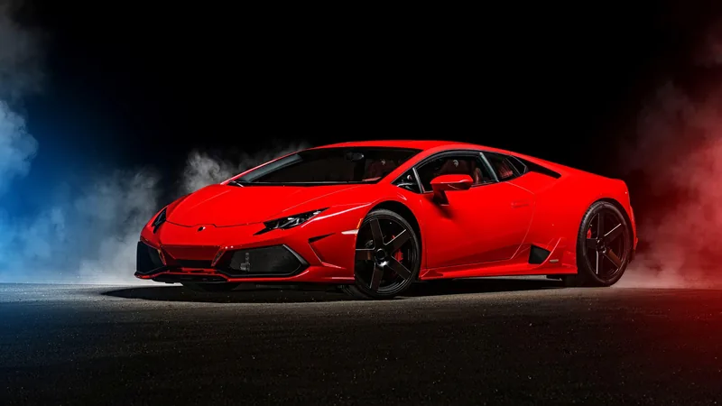
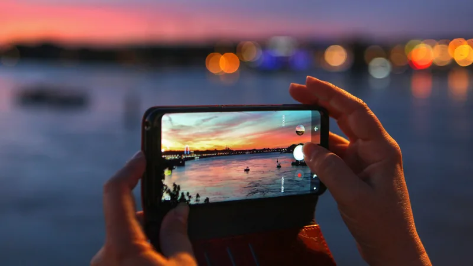
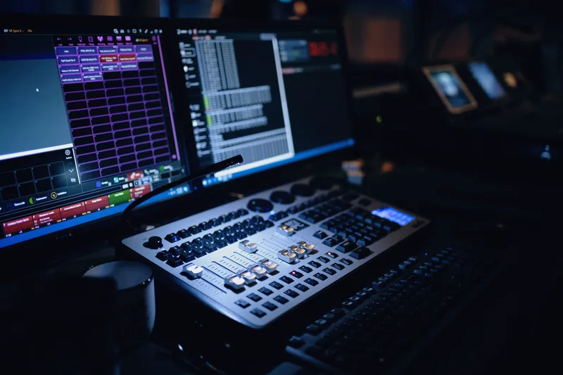

What drives me
More than pastimes
My hobbies are passions that shape who I am and how I see the world. Each one lets me express myself differently and keeps me learning — from the mechanical world of automobiles to the creative realms of photography and music. They've taught me patience, creativity, and the value of pursuing what truly excites me.
Automobilism
I've always been fascinated by cars and the freedom they represent on the open road. There's something special about understanding how engines work and appreciating automotive design — car shows, new models, or simply going for a drive.
The blend of engineering excellence and artistic design in automobiles never ceases to amaze me. For me, automobilism is the thrill of the journey and a passion for mechanical innovation — that's why this page opens with a car I can spin with my fingertips.

Mobile Photography
I love capturing moments wherever I go — my phone is always with me to do just that. Mobile photography lets me express creativity and see the world through a different lens, from landscapes to candid street shots.
What excites me most is how accessible it is: no heavy equipment, just my phone and my vision. I'm constantly learning about composition, lighting and editing — preserving memories and sharing my perspective in a creative way.

Music Production
I love experimenting with sounds and creating mashups. Using tools like Virtual DJ, I blend different tracks into something fresh — there's something magical about mixing two songs and discovering how well they complement each other.
Beats, transitions, effects — it's a fun, creative outlet that needs no expensive gear or formal training. It's all about the joy of experimentation and sharing cool mashups with friends who appreciate the art of mixing.
